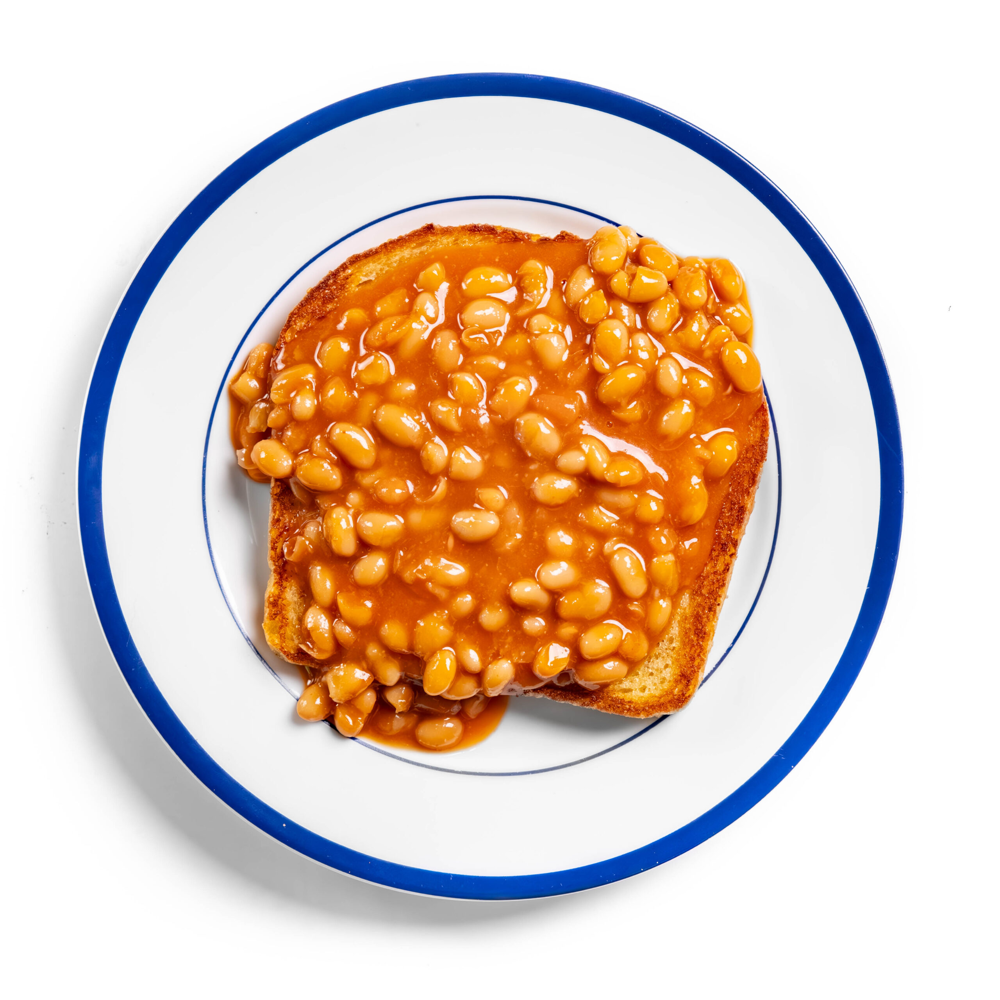

Beans on Toast

Description
Simple to put together,beans on toast is a British staple. Have it for breakfast, lunch, or dinner!
Ingredients:
- Baked beans
- Butter
- Bread
- Cheese, optional
Steps:
- Open the tin of beans and place in a saucepan over medium heat. Simmer for 5 minutes until hot.
- Put 2 slices of bread in the toaster and toast to your preference.
- Once the bread has been toasted, put a generous amount of butter on it. Tip: Add the cheese on top of the buttered bread here so that the hot beans will melt it.
- Pour over your beans, and add cheese.
Return to home